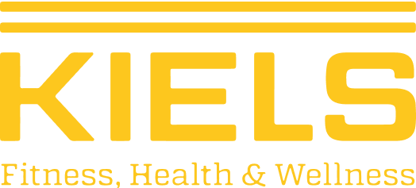
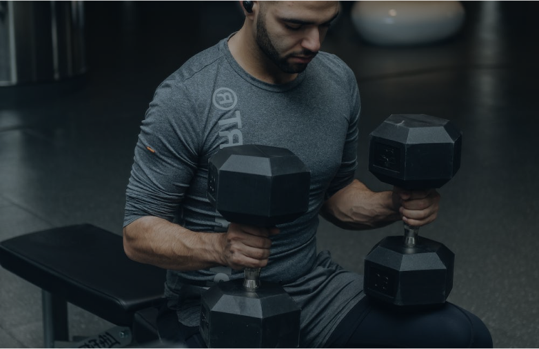

Ausdauer
Training
Moderne Ausdauergeräte, Pulssteuerung und einfache Bedienung ermöglichen ein sicheres und effektives Training.

Unser Ideal als Premium Fitnessstudio ist einfach: Unser Leistungsspektrum soll alles in bester Qualität für jeden Typ und jedes Ziel bieten.

AUF EINER FLÄCHE VON ÜBER 2.000 M²
Unsere motivierten und hoch qualifizierten Trainer helfen dir bei der Erstellung deines persönlichen Trainingsplans – mit Fokus auf deine individuellen Ziele.
Moderne Ausdauergeräte, Pulssteuerung und einfache Bedienung ermöglichen ein sicheres und effektives Training.
Individuelle Betreuung, regelmäßige Checks und ein auf dich abgestimmtes Trainingskonzept.
Abwechslungsreiches Ganzkörpertraining für Kraftausdauer, Koordination, Kraft und Beweglichkeit.
GET FIT
Gezielte sportliche Betätigung schafft eine Grundlage für Gesundheit, Leistungsfähigkeit und Motivation. Als Spezialist für gesundheitsorientierten Fitnesssport bieten wir Unternehmen individuelle Lösungen.
GET BETTER
Nach einer ausführlichen Einweisung ermöglichen die Geräte ein gelenkschonendes und ausgewogenes Ganzkörpertraining.
Melde dich bei uns für ein kostenloses Probetraining!
Probetraining